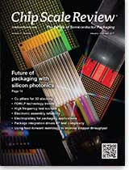

Future of packaging with silicon photonics
Cu pillars for 3D stacking
FOWLP technology trends
High frequency test sockets
Electronic assembly reliability
Electroplating for packaging applications
Package integration drives RF test complexity
Using feed-forward metrology to improve stepper throughput
Current Issue
Subscribe NowJanuary • February 2017; Volume 21, Number 1
Cover Photo
The cover shows two different optoelectronic interconnection methods developed to enable photon and electron conversion at the level of the microelectronic (logic) chip. Parallelized optical fibers (front) and lithographically-defined compliant polymer waveguides (behind) carry data in optical form to/from the IC. The flip-chip bumps on each die form the electrical connections to the package substrate. As optoelectronic conversion moves closer to the chip, improved data transfer speeds, bandwidth and power efficiencies are expected.
Cover image courtesy of IBM Corporation
Read the issue Download PDF Subscribe
Industry News
Reflections on IWLPC
By Louis Burgyan [LTEC Corporation]San Jose, CA – November 8, 2016 – The 13 th International Wafer-Level PackagingConference (IWLPC) and Exhibition,held in Silicon Valley on October 18-20, offered an excellent insight into current issues and future challenges in advanced packaging technologies.An impressive array of 48 presentations, five interactive presentations (poster sessions), and four workshops covered a wide array of topics with focus on various aspects of fan-out wafer-level packaging (FOWLP) ...>>